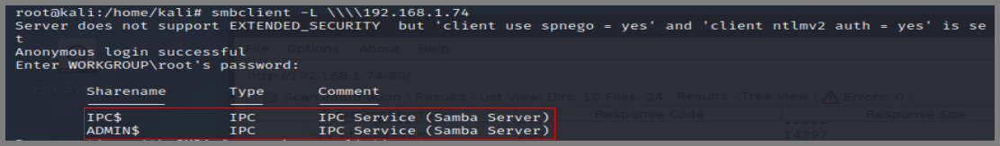
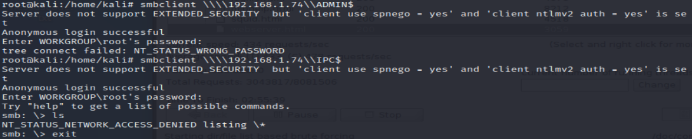

smbclient -L \\\\192.168.1.74
NAME
smbclient - ftp-like client to access SMB/CIFS resources on servers
NOTE: smbclient is dead on Kali 2020
PATCH: Go to /etc/samba/smb.conf file and add "client min protocol = NT1" under the global section
Anonymous root login => available fileshares

ADMIN$ and IPC$ access denied as anonymous user
